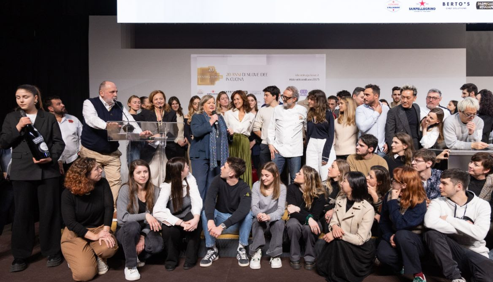
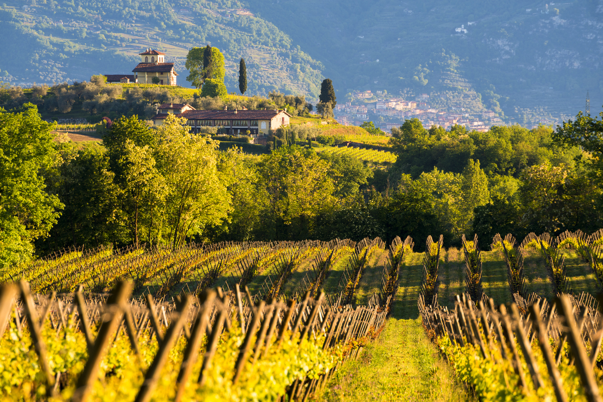

Una scala produttiva che tiene insieme Metodo Classico, lungo affinamento e presidio qualitativo.
Radici profonde, visione industriale, responsabilità misurabile.
Per Berlucchi la sostenibilità non è un capitolo separato, ma il modo con cui si protegge la qualità del Franciacorta lungo tutta la catena del valore: nel vigneto, in cantina, nelle decisioni di governance, nella relazione con il territorio e nell’esperienza finale del consumatore. Il 2024 racconta un sistema capace di unire radici agricole, visione industriale e responsabilità misurabile.
Percorsi di lettura
Dati, filiera, identità
Tre ingressi complementari per leggere il 2024: risultati, processi e responsabilità.
01
Numeri chiave
Valore generato, energia, persone, visitatori, filiera agricola e mercati serviti.
→ 02Filiera
Dalla vigna all’hospitality: pratiche, volumi, relazioni operative e continuità qualitativa.
→ 03Governance di sistema
Governance, responsabilità, territorio e innovazione: il livello in cui Berlucchi rende strutturale la sostenibilità.
→Quadro 2024
Produzione, mercati, persone: il 2024 in quattro dati di sistema.
La scala del sistema Berlucchi: produzione, presenza internazionale, persone e formazione sono il perimetro entro cui la sostenibilità diventa operativa.
Distribuzione globale sostenuta da una rete commerciale consolidata in Italia e all’estero.
Una struttura aziendale stabile che accompagna la continuità operativa del modello Berlucchi.
Competenze, aggiornamento e qualità del lavoro come parte concreta della sostenibilità.
Strategia di sostenibilità
Non partiamo dai numeri: partiamo da ciò che conta davvero.
Il percorso di materialità produce una mappa di priorità. In Berlucchi queste priorità si organizzano in quattro ambiti: ambiente, persone, territorio e governance. Le sezioni successive mostrano come ciascun ambito si traduca in pratiche, numeri e presìdi riconoscibili.
Comprendere il contesto
Analisi del settore, dei rischi, delle attese degli stakeholder e del ruolo che Berlucchi ricopre nella Franciacorta e nella propria filiera.
Individuare gli impatti
Identificazione degli impatti positivi e negativi generati dalle attività aziendali, dal vigneto alla distribuzione, lungo le dimensioni ambientali, sociali ed economiche.
Definire le priorità
Selezione e prioritizzazione dei temi più rilevanti per guidare le scelte dell’impresa e costruire una rendicontazione coerente, utile e confrontabile nel tempo.
La nostra idea di sostenibilità
Dove la sostenibilità diventa concreta.
La strategia prende forma in quattro campi di applicazione riconoscibili: ambiente, persone, territorio e governance. Qui la sostenibilità smette di essere metodo e diventa presidio operativo.
Energia, clima, acqua, suolo, biodiversità, materiali
Dalla lotta al cambiamento climatico alla gestione sostenibile dei consumi energetici, dalla circolarità dei materiali alla tutela di suolo, acque e biodiversità.
Qualità del prodotto, sicurezza, lavoro di qualità
La sostenibilità passa anche da salute e sicurezza dei lavoratori, formazione, consumo responsabile e tutela del consumatore finale.
Fornitori, comunità, Made in Italy, sviluppo locale
Il legame con la Franciacorta si misura nella filiera, nella valorizzazione del paesaggio, nei partner agricoli e nella promozione culturale del territorio.
Innovazione e integrazione della sostenibilità nelle decisioni
La sostenibilità è trattata come leva trasversale di gestione, con una struttura di governance dedicata e un presidio continuo sui processi aziendali.
Berlucchi
Dal primo Franciacorta a una produzione che tiene insieme origine, metodo e sviluppo.
Fondata nel 1955 e protagonista della nascita del Franciacorta nel 1961, Berlucchi ha costruito nel tempo un’identità che unisce patrimonio storico, presidio viticolo, cultura del Metodo Classico e capacità industriale. Nel 2024 questa continuità prende forma in una filiera estesa, in una presenza internazionale solida e in un rapporto ancora strettissimo con la Franciacorta.
Visione
Custodire il ruolo originario di Berlucchi nella Franciacorta facendo evolvere qualità, responsabilità e capacità industriale senza separarle dal territorio.
Origine e territorio
La Franciacorta non è solo luogo di provenienza: è paesaggio agricolo, reputazione, cultura del vino e contesto che dà coerenza all’intero racconto Berlucchi.
Metodo e qualità
Raccolta manuale, selezione delle uve, vinificazione accurata e affinamenti da 18 a oltre 140 mesi confermano una qualità costruita sul processo e sul tempo.
Filiera e relazioni
La dimensione aziendale si appoggia su una rete agricola ampia, una distribuzione strutturata, una forte attività di hospitality e una relazione costante con partner e visitatori.
Evoluzione
Ricerca agronomica, monitoraggio ambientale, formazione interna e presidio della governance mostrano una crescita che non si limita al volume, ma investe organizzazione e tenuta del modello.
Identità nel tempo
Berlucchi costruisce il proprio presente
Dalla radice storica della famiglia Lana-Berlucchi alla fondazione del primo Franciacorta, fino alla sostenibilità come leva di governance e al riconoscimento come Marchio Storico.
1879
Radice storica
La memoria precede il marchio
La datazione del registro vitivinicolo della famiglia Lana-Berlucchi fissa una radice storica anteriore al brand: Berlucchi nasce da una continuità territoriale, non da una costruzione artificiale.
- Origine documentata
- Radice familiare e agricola
Performance
Indicatori per annualità e categoria.
Qui i KPI diventano consultabili: puoi leggere i risultati per anno e filtrare il quadro tra dimensione economica, ambientale, sociale e territoriale. Produzione, energia, persone e relazioni territoriali compongono un quadro operativo leggibile e verificabile.
Scala economica dell’impresa nel 2024; nel report è accompagnata anche dal valore distribuito pari a 51,8 M€.
Base agricola presidiata direttamente; 43 ettari sono condotti da Agricola della Franciacorta.
La filiera è larga e strutturata: il valore locale non coincide con il solo patrimonio diretto.
Il dato restituisce massa critica e posizionamento, senza perdere il legame con il Metodo Classico.
Internazionalizzazione reale, ma ancora raccontata come estensione della Franciacorta, non come sradicamento.
830.565 kWh autoconsumati nel 2024: il dato concreto vale più di ogni genericità sulla transizione energetica.
Il dato è forte ma va letto con onestà: nel 2024 i rifiuti totali crescono e il recupero cala di un punto rispetto al 2023.
Dimensione organizzativa esplicita; la sostenibilità non si misura solo in input produttivi.
La qualità del lavoro è rappresentata da un indicatore operativo, non da un’affermazione astratta.
Il dato aiuta a riequilibrare la pagina rispetto alla sola dimensione ambientale.
L’hospitality è una leva culturale e reputazionale, non un contenuto laterale.
Indicatore utile per non appiattire la lettura sulla sola forza lavoro stabile.
Pratiche in campo
La sostenibilità, qui, coincide con scelte tecniche verificabili.
Non solo obiettivi e rendicontazione: il modello Berlucchi prende forma in pratiche agronomiche, protocolli condivisi, monitoraggi, materiali e progetti di ricerca applicata.
Protocollo e filiera agricola
Il PBVS definisce regole operative per la gestione del vigneto e viene condiviso anche con i partner conferitori, per estendere standard agronomici e responsabilità lungo la filiera.
Suolo e pratiche rigenerative
Irrigazione limitata ai casi di emergenza, concimazione organica, inerbimento, sovescio e valorizzazione dei sarmenti come risorsa per aumentare fertilità e sostanza organica del terreno.
Difesa integrata e monitoraggio
Trappole cromotropiche e a feromoni, confusione sessuale contro la tignoletta, trattamenti mirati e attenzione alla tutela degli impollinatori anche nella gestione delle finestre di intervento.
Ricerca applicata
Mille1Vigna, mappe di vigore, Biopass, Life Vitisom e collaborazioni universitarie trasformano la sostenibilità in conoscenza operativa e decisione agronomica.
Governance
Chi governa la sostenibilità in Berlucchi.
Nel 2024 la sostenibilità si appoggia su una struttura ordinata che opera su livelli diversi, con ruoli definiti di indirizzo, coordinamento e presidio del reporting.
Consiglio di Amministrazione
Il CdA resta l’organo sovrano nelle decisioni strategiche che orientano la gestione complessiva dell’impresa. Definisce indirizzi, priorità strategiche e supervisione complessiva.
Comitato Strategico di Sostenibilità
Il CSS definisce linee guida, approva il piano strategico e presidia il coordinamento delle funzioni aziendali. Approfondisce temi ESG, orienta le scelte e accompagna lo sviluppo del percorso aziendale.
Comitato dei Referenti di Sostenibilità
Il CRS monitora l’avanzamento dei progetti, raccoglie istanze interne ed esterne e contribuisce alla definizione della materialità. Coordina dati, contenuti e contributi interni necessari alla rendicontazione annuale.


“La qualità del vino, il valore del paesaggio e la reputazione del marchio si alimentano nella stessa geografia.”
Per Berlucchi il territorio non coincide con una superficie coltivata: è un sistema di luoghi, memoria, paesaggio e responsabilità. Cantina storica, Palazzo Lana, Castello di Borgonato, vigneti simbolici e tutela del borgo compongono un rapporto con la Franciacorta che è insieme produttivo, culturale e paesaggistico.
Persone e territorio
Le persone sostengono la qualità tanto quanto i vigneti e la cantina.
Organico stabile, formazione continua, stagionalità governata e apertura al pubblico definiscono una dimensione umana misurabile.
Lavoro stabile e competenze
La sostenibilità interna non si misura solo nel numero delle persone, ma nella qualità del rapporto di lavoro, nella continuità occupazionale e nella crescita delle competenze.
- 90% dei contratti a tempo indeterminato
- +7% dipendenti rispetto al 2023
- 1.451 ore di formazione come investimento strutturale
- 40% presenza femminile, in lieve crescita sul 2023
Fornitura locale e prossimità
Il radicamento territoriale non si vede solo nei vigneti: si legge anche nella politica di acquisto e nella scelta di mantenere una quota molto alta di relazioni economiche in Lombardia e in provincia di Brescia.
- 90% dei fornitori di prodotto è in Lombardia
- 67% dei fornitori di prodotto è in provincia di Brescia
- 96% dei fornitori hospitality è in Lombardia
- 85% dei fornitori hospitality è in provincia di Brescia
Relazione con la comunità professionale
Per Berlucchi il territorio non è solo una geografia produttiva: è anche una rete di relazioni culturali, formative e professionali che rafforzano la reputazione della Franciacorta nel tempo.
- Oltre 60.000 presenze complessive nell’hospitality nel triennio 2022–2024
- Più di 12.000 visite consumer annue in modo stabile
- Circa 2.000 partecipanti AIS ogni anno
- Academia Berlucchi attiva dal 2019 come spazio di confronto su sostenibilità, innovazione e territorio
Innovazione
Innovazione come capacità di misurare, sperimentare e correggere.
In Berlucchi innovare significa misurare meglio, coltivare meglio e decidere meglio: dal carbon accounting alla gestione del suolo, fino ai protocolli tecnici condivisi con la filiera.
PBVS
Un protocollo proprietario che traduce la sostenibilità del vigneto in regole operative condivise.
Carbon footprint
Misurazione e certificazione dell’impronta carbonica secondo ISO 14064-1:2019 attraverso Ita.Ca.
Mille1Vigna e mappe di vigore
Conoscenza puntuale dei vigneti per orientare destinazione delle uve e gestione agronomica mirata.
Life Vitisom e Biopass
Ricerca su fertilità del suolo, biodiversità, sostanza organica e riduzione dell’impatto delle lavorazioni.
Archivio
Scarica le annualità disponibili.
Un accesso semplice ai report di sostenibilità, con una breve sintesi editoriale per ciascuna annualità.
Report di Sostenibilità 2024
Annualità della maturità: scala industriale, governance ESG più leggibile e forte presidio su energia, filiera e territorio.
Scarica PDFAnnualità precedente
Edizione utile per il confronto storico, ma non disponibile nel materiale caricato in questa versione del sito.
Non allegatoAnnualità precedente
Prevista nell’archivio, ma il PDF non è incluso nel materiale fornito.
Non allegatoAnnualità precedente
Prevista nell’archivio, ma il PDF non è incluso nel materiale fornito.
Non allegatoAnnualità precedente
Prevista nell’archivio, ma il PDF non è incluso nel materiale fornito.
Non allegatoPrima annualità del percorso
Importante sul piano storico, ma non disponibile come allegato in questo set di lavoro.
Non allegato